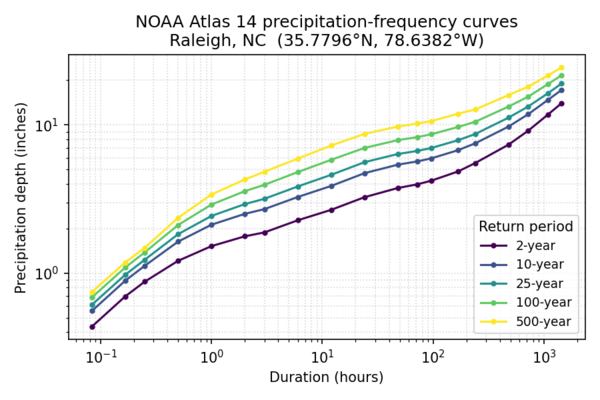

The module retrieves data directly from NOAA's public services:
https://hdsc.nws.noaa.gov/cgi-bin/new/fe_text.csvhttps://hdsc.nws.noaa.gov/pub/hdsc/data/ (autodiscovery),
or any user-supplied archive_url=.Point results include the expected value and the
upper/lower bounds of the 90% confidence interval, for
each duration/return-period combination published by NOAA. Use
bound=expected|upper|lower|all to select the table(s).
coordinates= accepts one or more lon,lat
pairs, e.g.
coordinates=-78.6382,35.7796,-81.0,29.5. When
coordinates= is omitted, the module queries the center of
the current computational region; the region bounds are reprojected to
WGS84 lon/lat via g.region -b so this works from any GRASS
location CRS.

r.noaa.atlas14 mode=point query to the NOAA Precipitation
Frequency Data Server. Each curve is the expected value for the labeled
return period.
When multiple points are queried, JSON output is emitted as a list of
per-point result objects, and CSV output prepends
lon,lat,bound columns so rows from different points and
bounds can be disambiguated. Single-point output keeps the original
unwrapped format for backward compatibility.
The statistic option controls whether PFDS returns
precipitation depth or intensity. The
units option (english or metric)
and series option (pds or ams —
partial-duration or annual-maximum series) are passed through to
PFDS.
If vector_output= is given, the module creates a vector
point map with one feature per queried point and columns lon,
lat, expected_json, upper_json,
lower_json. Point geometries are reprojected from WGS84 into
the current project's CRS, while the lon/lat
columns keep the original WGS84 coordinates. The JSON columns contain the
full per-duration tables so they can be queried later with
v.db.select / db.select.
NOAA organizes Atlas 14 GIS archives under per-volume
subdirectories of base_gis_url=, e.g.
https://hdsc.nws.noaa.gov/pub/hdsc/data/se/ for Volume 9
Southeastern States. When region= is given, autodiscovery
fetches the listing at
<base_gis_url>/<region>/ and parses every
*.zip href.
Filenames follow a compact convention
<region><ari>yr<NN><unit>a[l|u][_ams].zip,
e.g.:
se2yr24ha.zip — Southeastern, 2-year ARI, 24-hour,
expected, PDSorb1000yr30mau_ams.zip — Ohio River Basin, 1000-year,
30-minute, upper bound, AMSse1000yr60dal.zip — Southeastern, 1000-year, 60-day,
lower bound, PDSwhere <unit> is m, h, or
d (minute/hour/day), bound is absent for the expected value
and l/u for the lower/upper 90% confidence
bounds, and _ams marks the annual-maximum series (absent =
partial-duration series).
If autodiscovery fails or a custom mirror is used, pass
archive_url= directly with either a .zip URL
or a directory listing URL that contains the ZIPs.
The -l flag lists matching archives (as JSON lines)
without downloading them.
Filtering behavior:
durations= and aris= are strict:
candidates whose duration or ARI could not be inferred from the filename
are rejected.bound= and series= are permissive:
a candidate with an unknown attribute is allowed through, to avoid
discarding rasters whose filenames do not encode every attribute.statistic= and units= do not filter
archives in grid mode. NOAA only publishes depth in english units, so the
module always downloads that and rescales the imported rasters to the
requested statistic/units as output targets.Rasters are imported with r.in.gdal by default; pass
-i to use r.import (which supports reprojection
via resample=). Pass -o to override the
projection check when using r.in.gdal. Imported raster names
follow the pattern
<output_prefix>_<statistic>_<bound>_<duration>_<ari>yr_<units>_<series>_<region>,
with missing parts omitted.
NOAA Atlas 14 GIS grids encode precipitation depth as integer
1000ths of an inch in the raw archives. Grid mode converts the
imported rasters automatically, so no manual rescaling is needed: depth
is written in inches (or mm with units=metric) and intensity
in in/hr (or mm/hr), according to the requested statistic
and units. The raster units and title set by
r.support describe the converted values. NODATA cells become
GRASS NULLs on import, so the sentinel value (which varies by volume)
does not need to be handled.
Extracted ZIP members are validated against path traversal (zip-slip): any member whose resolved path escapes the temporary extraction directory causes the import to abort.
r.noaa.atlas14 mode=point coordinates=-78.6382,35.7796 \
statistic=intensity units=english series=pds bound=expected \
format=csv output=/tmp/raleigh_idf.csv
r.noaa.atlas14 mode=point coordinates=-78.6382,35.7796 \
statistic=depth units=english series=pds bound=all \
format=json output=/tmp/raleigh_atlas14.json \
vector_output=atlas14_raleigh
r.noaa.atlas14 mode=point \
coordinates=-78.6382,35.7796,-80.8431,35.2271,-77.8868,34.2257 \
statistic=depth units=english series=pds bound=expected \
format=csv output=/tmp/nc_cities_idf.csv \
vector_output=atlas14_nc_cities
g.region raster=elevation r.noaa.atlas14 mode=point format=json bound=expected
r.noaa.atlas14 mode=grid region=se -l
r.noaa.atlas14 mode=grid \
archive_url="https://hdsc.nws.noaa.gov/pub/hdsc/data/se/se100yr24ha.zip" \
output_prefix=a14 -i
r.noaa.atlas14 mode=grid region=se \
durations=24hr,2day aris=10,100 bound=expected \
output_prefix=a14 output=/tmp/a14_manifest.csv -i
{kind=link}